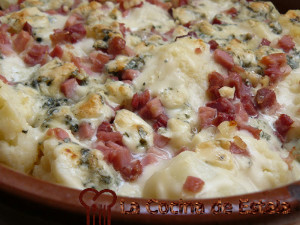

Coliflor Gratinada
Ingredientes
- 1 coliflor (más o menos 800 g.)
- 200 g. de pechuga de pavo.
- 4 huevos.
- 1 cebolla.
- 150 g. de queso parmesano rallado.
- 2 cucharadas de mantequilla
- Pimienta negra.
- Sal.
Preparacion
Precalentar el horno a 180º.
Poner una olla con dos litros de agua al fuego para que hierva. Cuando esté hirviendo añadir un pocos de sal.
Cortar la coliflor y ponerla a cocer en el agua hirviendo con un poco de sal, durante 10 minutos para que no quede muy tierna.
Mientras se cuece la coliflor, picar la cebolla muy fina y la pechuga de pavo a taquitos y reservar.
Batir las claras a punto de nieve. Seguidamente mezclar con las yemas también batidas y remover con cuidado para que no bajen mucho las claras.
Una vez que la coliflor está tierna, escurrir y poner en una fuente para horno.
Echar por encima la mantequilla, salpimentar y añadir la cebolla, la pechuga de pavo, los huevos batidos y el queso rallado.
Hornear durante 20 minutos o hasta que la coliflor esté doradita. Servir inmediatamente.